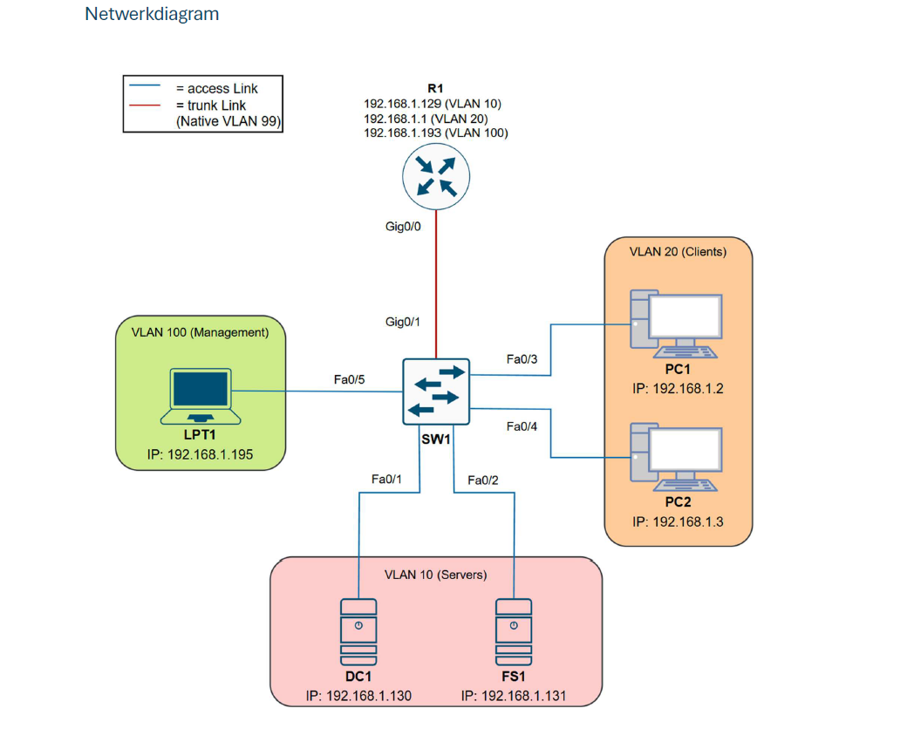

Secure Enterprise Network

Projectoverzicht
Voor dit project heb ik meegewerkt aan het ontwerpen en implementeren van een veilig bedrijfsnetwerk met focus op netwerksegmentatie, centrale gebruikersbeheer en security. Ik was betrokken bij de configuratie van VLANs, IP-adressering, Cisco netwerkapparatuur en het opzetten van een Windows Server omgeving met Active Directory.
Mijn rol
- Configuratie van VLANs en netwerksegmentatie
- Opzetten van Router-on-a-Stick (inter-VLAN routing)
- Configuratie van Cisco switch en router (CLI)
- Implementatie van securitymaatregelen
- Werken met Windows Server Core en Active Directory
Het project bestond uit een Cisco-router, Cisco-switch, Windows Server Core, Domain Controller, File Server, clients en een managementlaptop. De focus lag op netwerksegmentatie, centraal beheer en cybersecurity.
Netwerkarchitectuur
Het netwerk werd opgesplitst in verschillende VLANs. Hierdoor worden servers, clients en managementtoestellen logisch van elkaar gescheiden. Via Router-on-a-Stick werd communicatie tussen de VLANs mogelijk gemaakt.
- VLAN 10: Servers
- VLAN 20: Clients
- VLAN 99: Native VLAN
- VLAN 100: Management
- VLAN 999: Blackhole VLAN voor ongebruikte poorten
Securitymaatregelen
Security was een belangrijk onderdeel van dit project. We hebben verschillende maatregelen toegepast om het netwerk beter te beschermen.
- SSH gebruikt voor veilig remote beheer
- VLAN 1 vermeden als standaard VLAN
- Native VLAN aangepast naar VLAN 99
- Ongebruikte switchpoorten uitgeschakeld
- Ongebruikte poorten toegewezen aan VLAN 999
- Wachtwoorden versleuteld op netwerkapparaten
Windows Server & Active Directory
Voor het servergedeelte werd gewerkt met Windows Server Core. De Domain Controller werd ingesteld via PowerShell en gebruikt voor centraal beheer van gebruikers, computers en policies.
- Installatie van Active Directory Domain Services
- Aanmaken van het domein snwb.test
- Organizational Units aangemaakt
- Testgebruikers toegevoegd
- Beheer via PowerShell
Group Policy Objects
Via Group Policy werden beveiligingsregels ingesteld voor gebruikers binnen het domein. Zo werd het netwerk centraal beheerd en beter beschermd tegen risico’s.
- USB-opslagmedia blokkeren
- Software-installatie beperken
- Logon-waarschuwing tonen bij aanmelden
Mijn bijdrage
Binnen dit project heb ik meegewerkt aan de technische uitwerking, configuratie en documentatie. Ik heb vooral ervaring opgedaan met netwerkconfiguratie, VLANs, IP-adressering, security en Windows Server-beheer.
Wat ik geleerd heb
- Een professioneel netwerk ontwerpen en documenteren
- VLANs en subnetten correct toepassen
- Router-on-a-Stick configureren
- Switches en routers beveiligen
- Windows Server Core beheren met PowerShell
- Active Directory en Group Policy gebruiken
Resultaat
Het eindresultaat is een stabiel en veilig bedrijfsnetwerk waarin alle toestellen correct met elkaar communiceren. Dankzij VLAN-segmentatie en securitymaatregelen is het netwerk beter beschermd tegen ongeautoriseerde toegang en mogelijke bedreigingen. Dit project toont mijn vaardigheden in netwerkbeheer, system administration en cybersecurity.
- Volledig werkend netwerk met VLAN segmentatie
- Centrale gebruikersbeheer via Active Directory
- Security policies succesvol geïmplementeerd